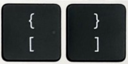
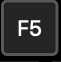
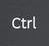
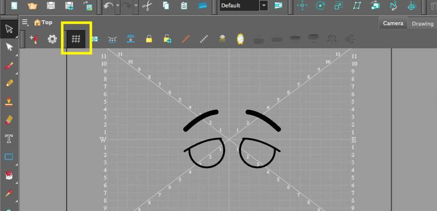
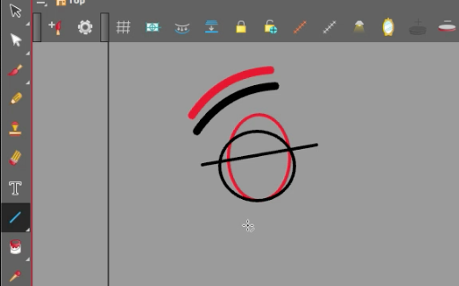

About this Lesson:
In this lesson you will now learn about Drawing Substitutions. Harmony's Drawing Substitutions view allows you to view all the drawings in the selected layer in a list of thumbnails, as well as to quickly select which drawing should be exposed at the current frame.
Lesson Duration: 2 hours
Harmony Topics:
- Library: The Library view is used to store elements such as animations, drawings, backgrounds and character models so you can reuse them in different scenes and projects. You can also use the Library view to create and store symbols, as well as to store and import images, sound files and 3D models.
- Drawing Substitutions: The Drawing Substitutions view is the easiest way to swap drawings. When you select a layer, the Drawing Substitutions view will display every drawing in that layer's element as thumbnails. All you have to do is select the frame where you want to swap drawings, then click on the thumbnail of the drawing you want to expose.
- Show Grid: You can click Show Grid to show the grid in both the Drawing and Camera views. Keep in mind that the grid will only be visible in the Camera view when a drawing layer is activated and a drawing tool is selected.
- Select/Cutter: The Cutter tool lets you cut out part of a drawing so that you can transform it, copy it or delete it. It also allows you to trim overshot lines.
- Select/Reposition All Drawings: This tool allows you to reposition all drawings in a layer tat the same time. If the artwork on one frame is moved, the rest of the drawings on that layer will follow.
- Shape Tool/Ellipse: The Ellipse tool allows you to quickly draw an ellipse or a circle.
- Shape Tool/Line: The Line tool allows you to quickly draw a line segment by dragging the mouse from its starting point to its end point.
- Contour Editor: The Contour Editor lets you reshape vector shapes, brush strokes and lines in your drawings. Artwork in Harmony is made of vector shapes. Vector shapes are defined by points, the lines joining the points together (contours) and the curve vectors, represented by Bezier handles, which make the curve of said lines.
- Duplicating Drawings: If you want to modify a drawing that already exists, but keep the original drawing intact, you can duplicate the drawing and work on the copy. When duplicating a drawing, the exposure at the selected cell is replaced with the new drawing, up until the next key exposure. With Toon Boom Harmony Premium, you can create a keyframe at the same time as you duplicate your drawing. This way, you can modify and reposition drawings without affecting the original drawing.
- Flip Horizontally: Flips the current selection horizontally. You can also select Animation > Flip > Flip Horizontal from the top menu or press 4 or 5.
- Remove Key Exposures: When you no longer need a key exposure, you can remove it. When you remove a key exposure, the exposure of the drawing before it is extended over the exposure of the deleted key exposure.
Shortcuts Presented in this lesson:

[ ] = Change Parameter= Arrow Keys

F5 = Extend ExposureOption and drag (macOS) or

Ctrl and drag (windows) = Create a cloneTask:
-
Begin by watching and taking notes on the Drawing Substitutions video (above) and the topics presented in this lesson.
-
Review Animation rubric found in the Lesson Files.
-
Create your own blinking eyes animation by following the steps laid out in the video. Be sure to save and export your Harmony file as: YourName_Blinking Eyes in your Documents folder. Submit your animated video using the Submit File section on the bottom of this page. Be sure to continue to take notes in your sketchbook/notebook on how to use Harmony and any animation terminology as it will help you prepare for your certification exam at the end of this course.
Step 1 - Create eye art:
- Launch Toon Boom Harmony.
- In the Welcome Window, create a new scene called: 'Blinking_Eyes'.
- Browse and set the location to your Document Folder.
- Keep the Camera Size at the default HDTV_1080p24 1080p (1920 by 1080 pixels and the frame rate is 24 frames per second).
- Click Create Scene.
- Create a layer and name it 'Eyes'.
- Enable Show Grid above your Camera View.

Drawing Substitution 1:
- Draw the eye with the Ellipse tool on frame 1. Make sure the stroke weight is at 20.
- Draw the eyebrow using the Line tool on frame 1.
- Go to the Select tool, select the eyebrow and change the weight of the line to 50 in the Tool Properties View.
- Use the Contour Editor to curve the eyebrow line art.
- Right click on frame 2 of the eyes layer and select Extend Exposure.
- Right click on frame 2 and go to Drawings/Duplicate Drawings. This becomes Drawing 2 in the Parameters.
- Enable Onion Skin.
- Use the Select tool to Squash & Stretch the eye.
- Use the Select tool to move the eyebrow art down a little.
- Select the Line tool and draw a line (same thickness as the ellipse = 20) across the eye. You may want to draw the line at a slight angle.

- Go to frame 3 and click F5 on your keyboard to extend the exposure (or right click on the frame and select Extend Exposure.)
- Right click on frame 3 select Drawings/Duplicate Drawings. This becomes Drawing 3 in the Parameters.
- Reposition the eyebrow a little close to the eye.
- Reposition the line through the eye so it is close to the bottom of the eye.
- Select the Contour Editor and add a curve to the bottom line. Make it look like the eye is closed.
- Use the Select tool to remove the ellipse completely on drawing 3 (see image below).

- Scrub Playhead through eye drawings.
- Clean up the artwork. Use the Select/Cutter tool to remove unwanted extra line art.
- Go to frame 1 of the eyes layer.
- Use the Select tool and drag the cursor over the eyebrow and eye.
- Use the Option key (macOS) or Ctrl (windows), or copy and paste the artwork. Begin to drag the art to the right while you hold down the Shift key to keep the eye art lined up. Release the mouse and keyboard. You should now have two eyes on your Camera view.
- Enable Onion Skin.
- Do the same with drawing 2 and drawing 3.
- Select the new art and select Flip Horizontally in the Tool Properties View.
- Use the arrow keys to nudge your art.
- Scrub through the 3 frames to see the blink animation.
- You will need to set up the drawings to create a full blink animation.
- Go to frame 60 on the eyes layer. Right click and select Extend Exposure.
- Shift click (hold shift down on the keyboard and select) the first 3 frames on the eyes layer.
- Click Remove Key Exposures on the Timeline.
- You should only have Drawing 1 visible on all 60 frames.
For the next step you will experiment with 3 different ways to apply substitutions.
- Select frame 23. Go to Parameters and select 2.
- Select frame 25. Go to Library/Drawing Substitutions. Use the slider to select Drawing 3.
- Select frame 29. This time go to Windows (Main Menu bar). Select Drawing Substitutions. Select Drawing 2 in the new Drawing Substitutions View.
You can even substitute drawings in the parameters by using the [ or ] on your layer.
- In the timeline, add a Colour Card by selecting the + icon. Select a colour for your Colour Card by selecting the orange icon next to the name Colour Card. Select a colour using the colour mixer.
- Review your animated scene one more time.
- Go to File/Export/Animated movie. Select your Documents folder as the destination location.
- Test out your exported eyes animation.
- Submit your work.